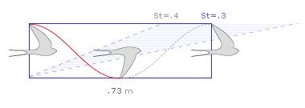
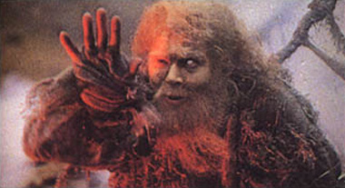

Airspeed velocity and unladen swallows
dinsdag 25 november 2003 | Zomaar
Wie is de man die met zijn ziekelijke witte oog duizenden zielen tot waanzin dreef alvorens ze op gruwelijke wijze van hun aardse bestaan te beroven? Wie is de man, die de moderne mens in het ongewisse liet over één der laatste en grootste overgebleven levensbeschouwelijke vragen van deze en alle tijden, door zich zonder ons van antwoord te voorzien, in een allesverterend inferno te storten?
Het is The Man from Scene 24, ook wel bekend als The Bridgekeeper uit The Search for the Holy Grail, aan wie deze weblog met trots de naam ontleent! Sinds decennia zijn zijn voorlaatste woorden immers gebrand in het collectieve geheugen van de mensheid:
“What is the airspeed velocity of an unladen swallow?” — The Man from Scene 24
Welnu, beste vrienden, dit laatste grote mysterie is vandaag opgelost… “History was made on the Internet this past week with the publication of a seminal piece of research, Estimating the Airspeed Velocity of an Unladen Swallow.”


Terry Gilliam als The man from scene 24”. (bron: The Daily Llama)
David op 26 november 2003
Moehahaha! “It’s just a little rabbit.”